import pandas as pd
import scanpy as sc
import anndata as ad
# add local forder to python lib ## why it's not working here but works in command line?
import importlib
from sc_utils import scanpy_utils as su
import numpy as np
import os
import re
import matplotlib.pyplot as plt
import pickle
import seaborn as sns
from matplotlib.pyplot import rc_context
import numpy as np
import scipy.sparse as sp
import anndata
from typing import Dict, Optional
from collections import defaultdict
import itertools
import pygame
from matplotlib import cm
import matplotlib
import seaborn as sns
from collections import Counter
importlib.reload(su)## later will be in .matplotlibrc
custom_params = {"axes.spines.right": False, "axes.spines.top": False}
from matplotlib import rcParams
rcParams['font.family'] = 'sans-serif'
matplotlib.rcParams['font.sans-serif'] = ['Arial']
matplotlib.rcParams['pdf.fonttype'] = 42
matplotlib.rcParams['ps.fonttype'] = 42
sns.set_theme(style="ticks", rc=custom_params)
matplotlib.rcParams['figure.figsize'] = [6, 5]## check versions
## testing stage, with high verbosity
sc.settings.verbosity = 3 # verbosity: errors (0), warnings (1), info (2), hints (3)
sc.logging.print_header()
sc.set_figure_params(dpi=900, color_map = 'viridis_r')2024-06-03 12:12:41.960401: I tensorflow/core/platform/cpu_feature_guard.cc:193] This TensorFlow binary is optimized with oneAPI Deep Neural Network Library (oneDNN) to use the following CPU instructions in performance-critical operations: SSE4.1 SSE4.2 AVX AVX2 FMA
To enable them in other operations, rebuild TensorFlow with the appropriate compiler flags.scanpy==1.10.0 anndata==0.8.0 umap==0.5.5 numpy==1.26.3 scipy==1.11.4 pandas==1.5.3 scikit-learn==1.4.0 statsmodels==0.14.0 igraph==0.10.3 pynndescent==0.5.8workdir='/mnt/data/hong/2024/human_placenta_debnlab/benchmark'
os.chdir(workdir)project_name = 'dnbelab beta test'
h5dir = f'{workdir}/h5_input/emptyDrops_platforms'
filter_params = {
'min_counts':400, 'min_genes':200, 'max_genes' : 5000, 'percent_mt':5, 'percent':3, 'filter_mt':True
}
raw_dict = defaultdict(lambda: "Not Present")
no_doublet_dict = defaultdict(lambda: "Not Present")
filter_dict = defaultdict(lambda: "Not Present")
for root, sample_list, filenames in os.walk(f'{h5dir}'):
for sample_name in sample_list:
if sample_name=='10x':
raw_dict[sample_name] = sc.read_10x_h5(f'{h5dir}/{sample_name}/{sample_name}_filtered_feature_bc_matrix.h5')
else: raw_dict[sample_name] = sc.read_h5ad(f'{h5dir}/{sample_name}/{sample_name}_filter_feature.h5ad')for sample_name, sample in raw_dict.items():
sample.var_names_make_unique('+')
sc.external.pp.scrublet(sample)
su.doublet_plot(basedir=f'{workdir}/h5_analysis/',sample_name=f'{sample_name}_default', sample=sample)Running Scrublet
filtered out 12509 genes that are detected in less than 3 cells
normalizing counts per cell
finished (0:00:00)
extracting highly variable genes
finished (0:00:00)
--> added
'highly_variable', boolean vector (adata.var)
'means', float vector (adata.var)
'dispersions', float vector (adata.var)
'dispersions_norm', float vector (adata.var)
normalizing counts per cell
finished (0:00:00)
normalizing counts per cell
finished (0:00:00)
Embedding transcriptomes using PCA...
using data matrix X directly
Automatically set threshold at doublet score = 0.33
Detected doublet rate = 0.2%
Estimated detectable doublet fraction = 1.6%
Overall doublet rate:
Expected = 5.0%
Estimated = 11.8%
Scrublet finished (0:00:09)
Running Scrublet
filtered out 4323 genes that are detected in less than 3 cells
normalizing counts per cell
finished (0:00:00)
extracting highly variable genes
finished (0:00:00)
--> added
'highly_variable', boolean vector (adata.var)
'means', float vector (adata.var)
'dispersions', float vector (adata.var)
'dispersions_norm', float vector (adata.var)
normalizing counts per cell
finished (0:00:00)
normalizing counts per cell
finished (0:00:00)
Embedding transcriptomes using PCA...
using data matrix X directly
Automatically set threshold at doublet score = 0.46
Detected doublet rate = 0.0%
Estimated detectable doublet fraction = 0.7%
Overall doublet rate:
Expected = 5.0%
Estimated = 5.3%
Scrublet finished (0:00:14)/mnt/data/hong/anaconda3/envs/scanpy/lib/python3.10/site-packages/sklearn/utils/deprecation.py:86: FutureWarning: Function scrublet is deprecated; Import from sc.pp instead
warnings.warn(msg, category=FutureWarning)
/mnt/data/hong/anaconda3/envs/scanpy/lib/python3.10/site-packages/scanpy/preprocessing/_scrublet/core.py:335: FutureWarning: X.dtype being converted to np.float32 from float64. In the next version of anndata (0.9) conversion will not be automatic. Pass dtype explicitly to avoid this warning. Pass `AnnData(X, dtype=X.dtype, ...)` to get the future behavour.
AnnData(
/mnt/data/hong/anaconda3/envs/scanpy/lib/python3.10/site-packages/scanpy/preprocessing/_scrublet/core.py:335: FutureWarning: X.dtype being converted to np.float32 from float64. In the next version of anndata (0.9) conversion will not be automatic. Pass dtype explicitly to avoid this warning. Pass `AnnData(X, dtype=X.dtype, ...)` to get the future behavour.
AnnData(
/mnt/data/hong/anaconda3/envs/scanpy/lib/python3.10/site-packages/sklearn/utils/deprecation.py:86: FutureWarning: Function scrublet is deprecated; Import from sc.pp instead
warnings.warn(msg, category=FutureWarning)
/mnt/data/hong/anaconda3/envs/scanpy/lib/python3.10/site-packages/scanpy/preprocessing/_scrublet/core.py:335: FutureWarning: X.dtype being converted to np.float32 from float64. In the next version of anndata (0.9) conversion will not be automatic. Pass dtype explicitly to avoid this warning. Pass `AnnData(X, dtype=X.dtype, ...)` to get the future behavour.
AnnData(
/mnt/data/hong/anaconda3/envs/scanpy/lib/python3.10/site-packages/scanpy/preprocessing/_scrublet/core.py:335: FutureWarning: X.dtype being converted to np.float32 from float64. In the next version of anndata (0.9) conversion will not be automatic. Pass dtype explicitly to avoid this warning. Pass `AnnData(X, dtype=X.dtype, ...)` to get the future behavour.
AnnData(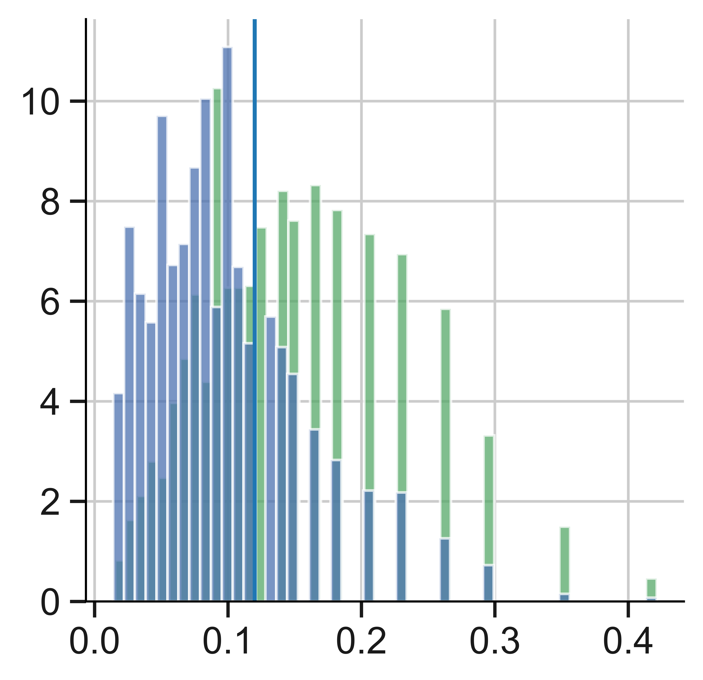
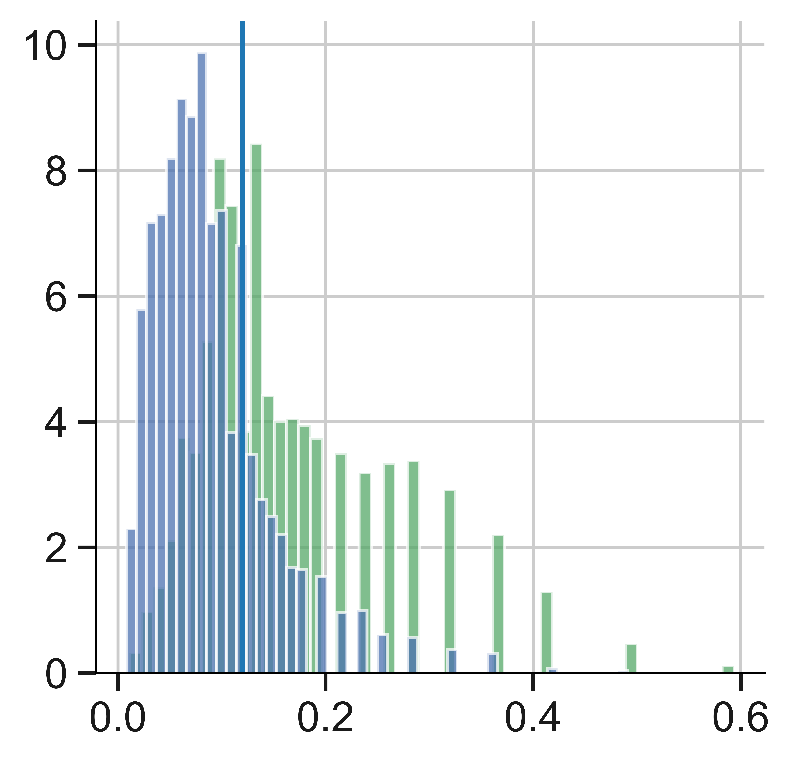
doublet_params = {
'10x':0.11, 'dnbelab':0.11,
}
for sample_name, sample in raw_dict.items():
sample.var_names_make_unique('+')
sc.external.pp.scrublet(sample, threshold=doublet_params[sample_name])
su.doublet_plot(basedir=f'{workdir}/h5_analysis/',sample_name=f'{sample_name}_manual', sample=sample)Running Scrublet
filtered out 12509 genes that are detected in less than 3 cells
normalizing counts per cell
finished (0:00:00)
extracting highly variable genes
finished (0:00:00)
--> added
'highly_variable', boolean vector (adata.var)
'means', float vector (adata.var)
'dispersions', float vector (adata.var)
'dispersions_norm', float vector (adata.var)
normalizing counts per cell
finished (0:00:00)
normalizing counts per cell
finished (0:00:00)
Embedding transcriptomes using PCA...
using data matrix X directly
Detected doublet rate = 32.6%
Estimated detectable doublet fraction = 62.9%
Overall doublet rate:
Expected = 5.0%
Estimated = 51.9%
Scrublet finished (0:00:10)
Running Scrublet
filtered out 4323 genes that are detected in less than 3 cells
normalizing counts per cell
finished (0:00:00)
extracting highly variable genes
finished (0:00:00)
--> added
'highly_variable', boolean vector (adata.var)
'means', float vector (adata.var)
'dispersions', float vector (adata.var)
'dispersions_norm', float vector (adata.var)
normalizing counts per cell
finished (0:00:00)
normalizing counts per cell
finished (0:00:00)
Embedding transcriptomes using PCA...
using data matrix X directly
Detected doublet rate = 25.6%
Estimated detectable doublet fraction = 66.2%
Overall doublet rate:
Expected = 5.0%
Estimated = 38.7%
Scrublet finished (0:00:15)/mnt/data/hong/anaconda3/envs/scanpy/lib/python3.10/site-packages/sklearn/utils/deprecation.py:86: FutureWarning: Function scrublet is deprecated; Import from sc.pp instead
warnings.warn(msg, category=FutureWarning)
/mnt/data/hong/anaconda3/envs/scanpy/lib/python3.10/site-packages/scanpy/preprocessing/_scrublet/core.py:335: FutureWarning: X.dtype being converted to np.float32 from float64. In the next version of anndata (0.9) conversion will not be automatic. Pass dtype explicitly to avoid this warning. Pass `AnnData(X, dtype=X.dtype, ...)` to get the future behavour.
AnnData(
/mnt/data/hong/anaconda3/envs/scanpy/lib/python3.10/site-packages/scanpy/preprocessing/_scrublet/core.py:335: FutureWarning: X.dtype being converted to np.float32 from float64. In the next version of anndata (0.9) conversion will not be automatic. Pass dtype explicitly to avoid this warning. Pass `AnnData(X, dtype=X.dtype, ...)` to get the future behavour.
AnnData(
/mnt/data/hong/anaconda3/envs/scanpy/lib/python3.10/site-packages/sklearn/utils/deprecation.py:86: FutureWarning: Function scrublet is deprecated; Import from sc.pp instead
warnings.warn(msg, category=FutureWarning)
/mnt/data/hong/anaconda3/envs/scanpy/lib/python3.10/site-packages/scanpy/preprocessing/_scrublet/core.py:335: FutureWarning: X.dtype being converted to np.float32 from float64. In the next version of anndata (0.9) conversion will not be automatic. Pass dtype explicitly to avoid this warning. Pass `AnnData(X, dtype=X.dtype, ...)` to get the future behavour.
AnnData(
/mnt/data/hong/anaconda3/envs/scanpy/lib/python3.10/site-packages/scanpy/preprocessing/_scrublet/core.py:335: FutureWarning: X.dtype being converted to np.float32 from float64. In the next version of anndata (0.9) conversion will not be automatic. Pass dtype explicitly to avoid this warning. Pass `AnnData(X, dtype=X.dtype, ...)` to get the future behavour.
AnnData(for sample_name, sample in raw_dict.items():
doublet = np.array(sample.obs['predicted_doublet'], dtype=bool)
no_doublet_dict[sample_name] = sample[~doublet]
## raw qc
for sample_name, sample in raw_dict.items():
su.qc(sample, f'{sample_name}_with_doublet', 'MT', basedir=f'{workdir}/h5_analysis/')
## doublet qc
for sample_name, sample in no_doublet_dict.items():
su.qc(sample, f'{sample_name}_no_doublet', 'MT', basedir=f'{workdir}/h5_analysis/')
filter_dict[sample_name] = su.filter_adata(sample, **filter_params)/mnt/data/hong/customized_scripts/snRNAtools/sc_utils/scanpy_utils.py:204: UserWarning: constrained_layout not applied because axes sizes collapsed to zero. Try making figure larger or axes decorations smaller.
plt.savefig(os.path.join(basedir, f'figures/{name}_mt_tc.pdf'),bbox_inches='tight')
/mnt/data/hong/customized_scripts/snRNAtools/sc_utils/scanpy_utils.py:204: UserWarning: constrained_layout not applied because axes sizes collapsed to zero. Try making figure larger or axes decorations smaller.
plt.savefig(os.path.join(basedir, f'figures/{name}_mt_tc.pdf'),bbox_inches='tight')
/mnt/data/hong/customized_scripts/snRNAtools/sc_utils/scanpy_utils.py:185: ImplicitModificationWarning: Trying to modify attribute `.var` of view, initializing view as actual.
data.var['mt'] = data.var_names.str.startswith(mtprefix) # annotate the group of mitochondrial genes as 'mt'
/mnt/data/hong/customized_scripts/snRNAtools/sc_utils/scanpy_utils.py:204: UserWarning: constrained_layout not applied because axes sizes collapsed to zero. Try making figure larger or axes decorations smaller.
plt.savefig(os.path.join(basedir, f'figures/{name}_mt_tc.pdf'),bbox_inches='tight')
/mnt/data/hong/anaconda3/envs/scanpy/lib/python3.10/site-packages/scanpy/preprocessing/_simple.py:278: ImplicitModificationWarning: Trying to modify attribute `.var` of view, initializing view as actual.
adata.var["n_cells"] = number
/mnt/data/hong/customized_scripts/snRNAtools/sc_utils/scanpy_utils.py:185: ImplicitModificationWarning: Trying to modify attribute `.var` of view, initializing view as actual.
data.var['mt'] = data.var_names.str.startswith(mtprefix) # annotate the group of mitochondrial genes as 'mt'
/mnt/data/hong/customized_scripts/snRNAtools/sc_utils/scanpy_utils.py:204: UserWarning: constrained_layout not applied because axes sizes collapsed to zero. Try making figure larger or axes decorations smaller.
plt.savefig(os.path.join(basedir, f'figures/{name}_mt_tc.pdf'),bbox_inches='tight')
/mnt/data/hong/anaconda3/envs/scanpy/lib/python3.10/site-packages/scanpy/preprocessing/_simple.py:278: ImplicitModificationWarning: Trying to modify attribute `.var` of view, initializing view as actual.
adata.var["n_cells"] = number
/mnt/data/hong/anaconda3/envs/scanpy/lib/python3.10/site-packages/IPython/core/pylabtools.py:152: UserWarning: constrained_layout not applied because axes sizes collapsed to zero. Try making figure larger or axes decorations smaller.
fig.canvas.print_figure(bytes_io, **kw)filtered out 82 cells that have more than 5000 genes expressed
filtered out 14056 genes that are detected in less than 3 cells
filtered out 52 cells that have more than 5000 genes expressed
filtered out 6137 genes that are detected in less than 3 cells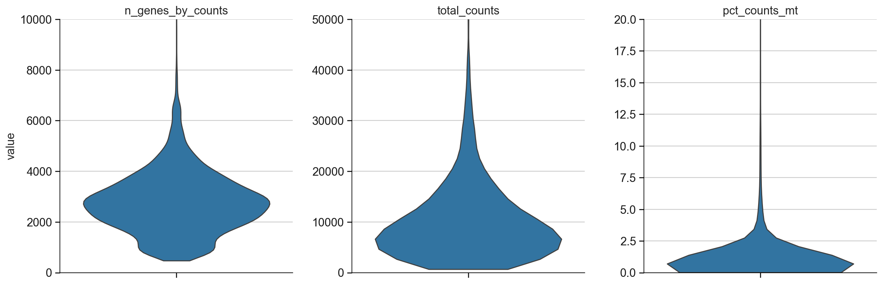
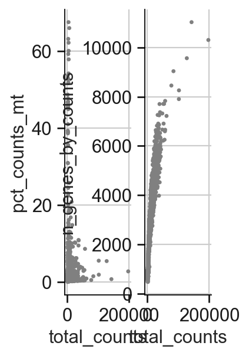
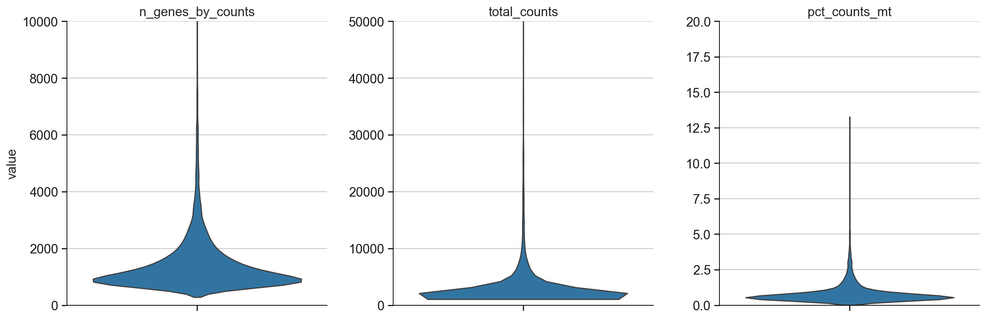
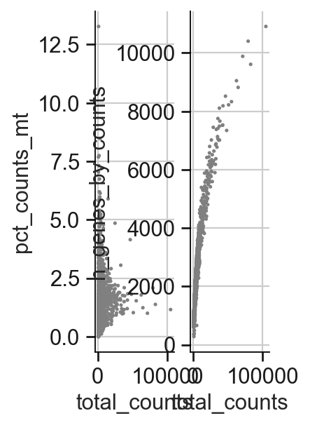
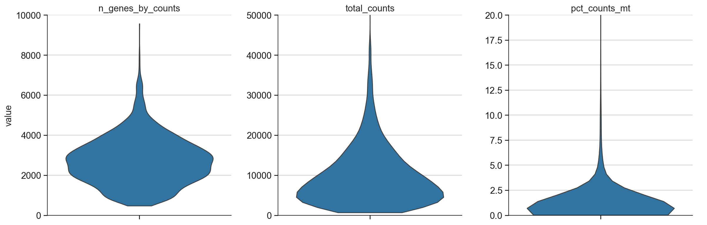
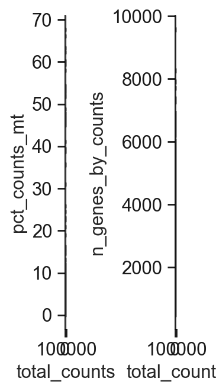
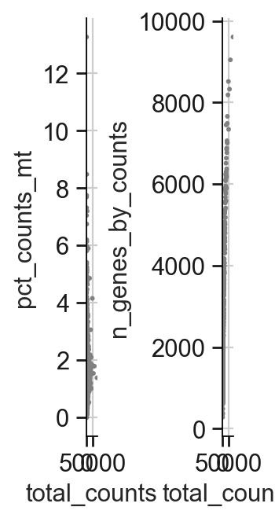
ad_all = ad.concat(list(filter_dict.values()), label='platform', keys=list(filter_dict.keys()), join='outer', index_unique='-', merge='same')cell_count_df = ad_all.obs.platform.value_counts()
cell_count_df = cell_count_df.to_frame()
cell_count_df.columns = ['count']cell_count_df.to_csv(f'{workdir}/h5_analysis/data/cell_count.tsv', sep='\t')ad_all.obs['n_genes'] = pd.to_numeric(ad_all.obs['n_genes'] )
sc.set_figure_params(scanpy=True, dpi=80, dpi_save=900, frameon=False, vector_friendly=True, fontsize=14, figsize=(2, 4), color_map=None, format='pdf', facecolor=None, transparent=True, ipython_format='png2x')
with plt.rc_context(): # Use this to set figure params like size and dpi
sc.pl.violin(ad_all, keys='n_genes', groupby='platform', rotation=90, order = ['10x', 'dnbelab'], stripplot=False)
plt.savefig(f"{workdir}/h5_analysis/figures/{project_name}_ngenes.pdf", bbox_inches="tight")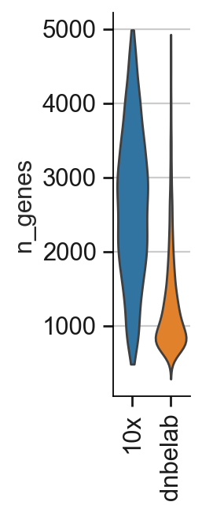
<Figure size 160x320 with 0 Axes>cell_count_df.index.name = 'platform'
cell_count_df.reset_index(inplace=True)fig = plt.subplots(figsize=(2,4))
bp = sns.barplot(cell_count_df, x='platform', y='count', palette="tab10")
fig = bp.get_figure()
fig.savefig(f"{workdir}/h5_analysis/figures/{project_name}_cell_count_.pdf")/tmp/ipykernel_3168428/779248788.py:2: FutureWarning:
Passing `palette` without assigning `hue` is deprecated and will be removed in v0.14.0. Assign the `x` variable to `hue` and set `legend=False` for the same effect.
bp = sns.barplot(cell_count_df, x='platform', y='count', palette="tab10")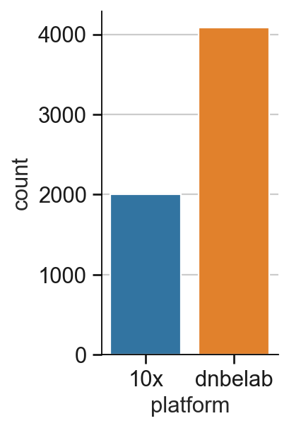
su.write_adata(ad_all, f'{workdir}/h5_output/concat_platforms.h5ad')